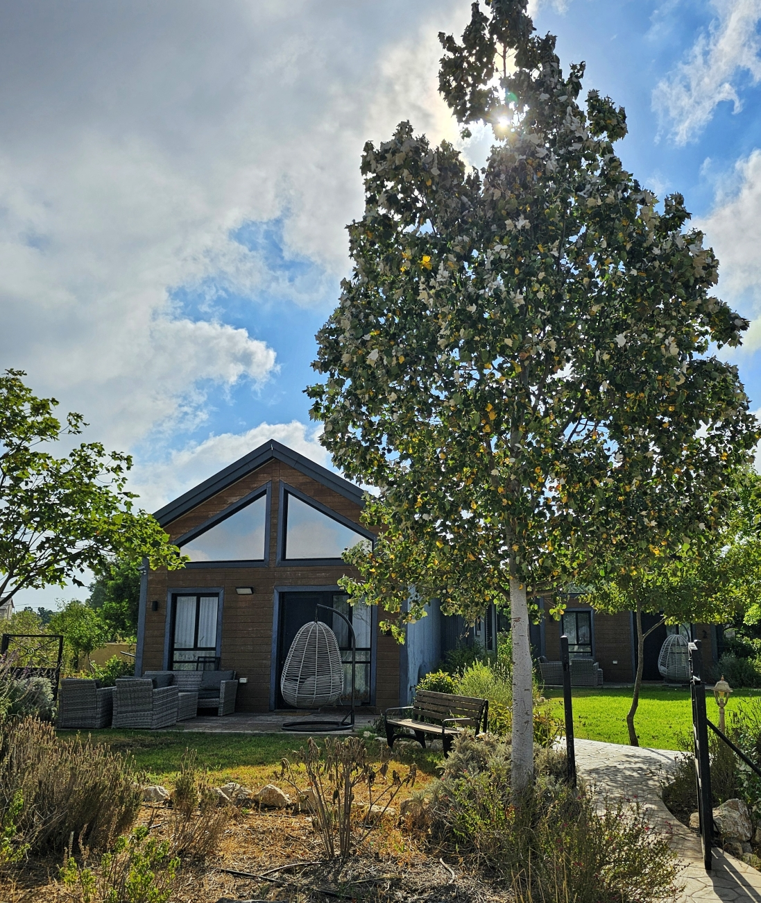
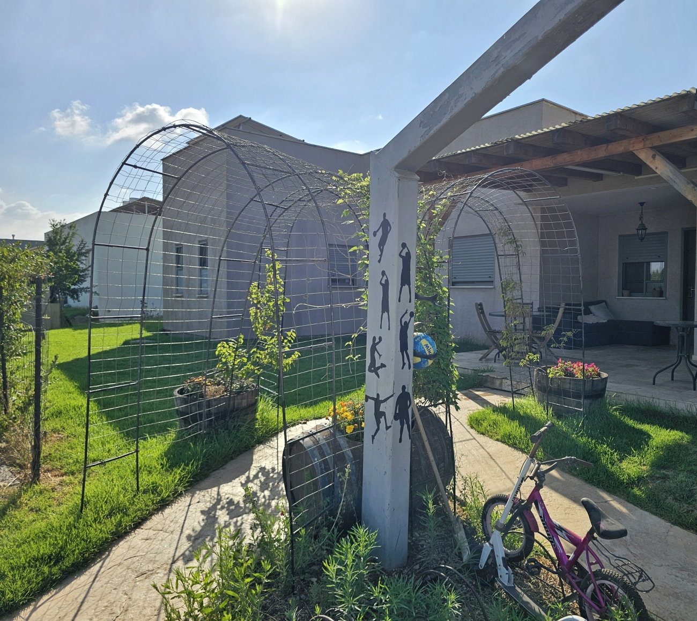
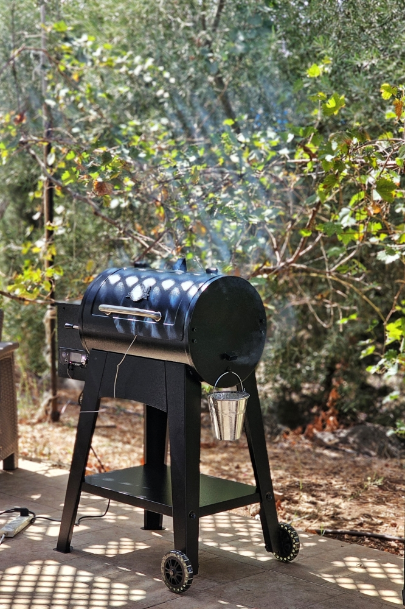
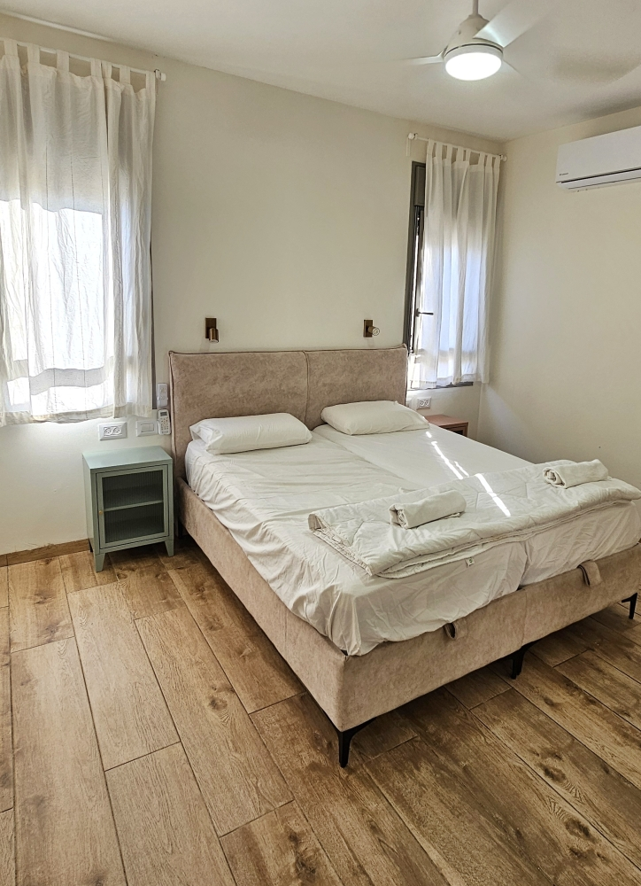
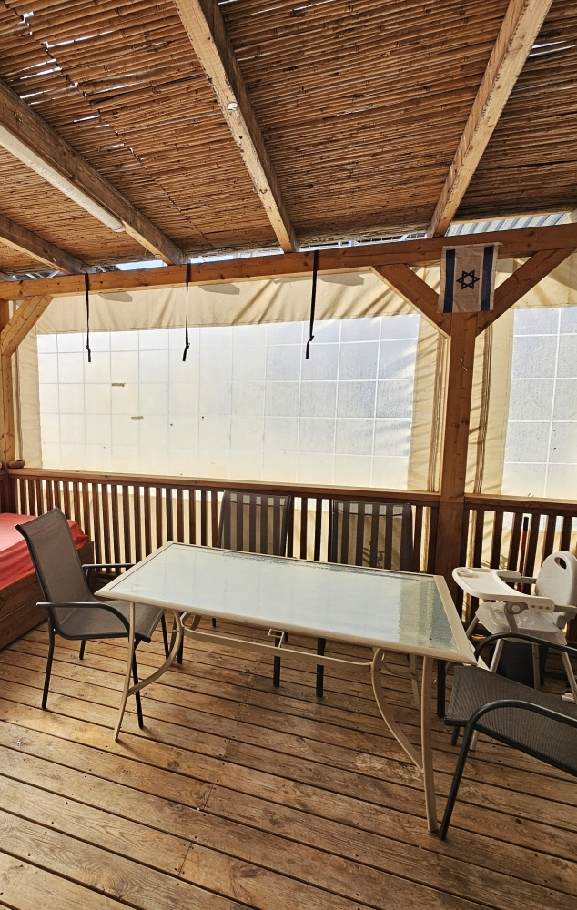
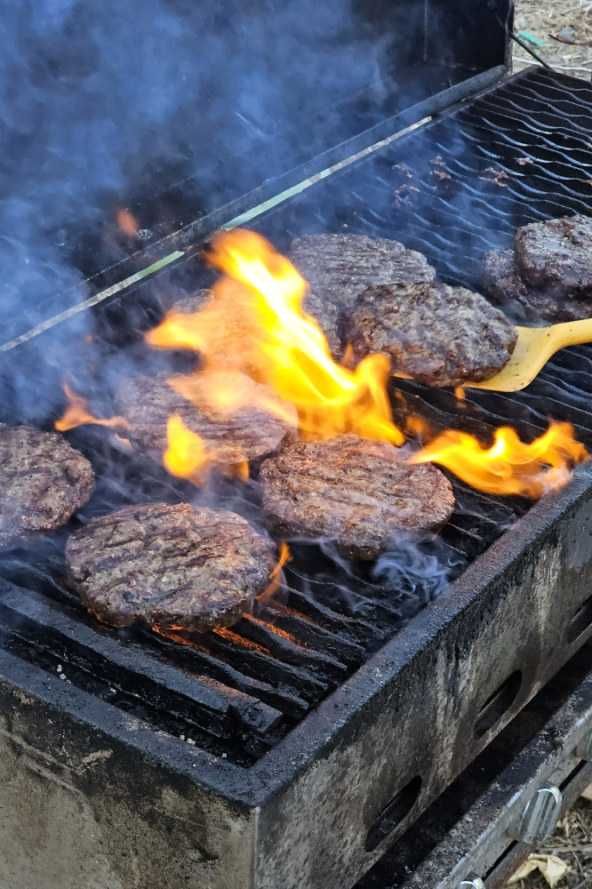
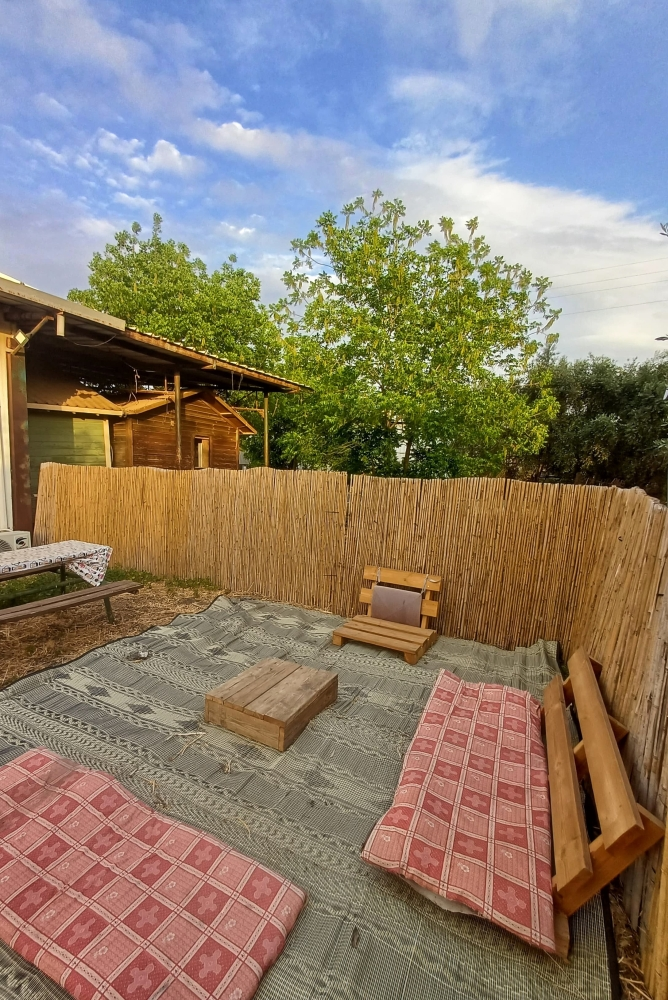

רגעים של הגולן
מטיילים, נושמים, מתאהבים
גללו
מטיילים, נושמים, מתאהבים
ברוכים הבאים לגולן
כאן תמצאו טעימה מהיופי ומהאווירה המיוחדת, אוויר נקי ושקט שקשה למצוא במקום אחר
להמלצות מותאמות אישית ומסלולים לפי הטעם שלכם, מארחי הצימר שלכם ישמחו לעזור

מתחם נוף -אירוח ואירוע מתחם ריזורט מפנק למשפחות וקבוצות
״התארחתם? המארחים שלכם מכירים כל פינה — פשוט תשאלו.״

אין תחושה כמו בוקר על מרפסת הצימר, כשהערפל עוד נשאר בין הגבעות. כל בוקר כאן קצת שונה — תלוי במזג האוויר, בעונה, ובמזל שלכם.
״מתלבטים מה לעשות היום? זו בדיוק השאלה שהמארחים אוהבים לענות עליה.״

וילה מהממת לנופש במושב נוב
״עברנו לקרית שמונה
והבית המהמם שלנו הפך לבית אירוח.
4 חדרי שינה, חדר משפחה, מטבח מאובזר, 2 מרפסות
וגינה מהממת.
נשמח מאוד לארח אתכם!״
כל צימר הוא עולם קטן משלו — עיצוב, חומרים ואופי שונים, אותה תחושת בית.






הגולן הוא גם עניין של טעם — יקבים קטנים, מחלבות בוטיק ובוסתנים שנותנים לפרי לדבר בעד עצמו. והוא גם טעם של קפה בשטח ליד איזה מעיין.
איזה טעם הכי מתאים לכם היום? זו בדיוק השאלה למארחים שלכם.
רגעים מיוחדים מכל עונות השנה, הזמנה לטעום ולהרגיש את הגולן


לכל שאלה, המלצה או רעיון למסלול — מארחי הצימר שלכם קרובים, זמינים, ומכירים את הגולן הכי טוב.